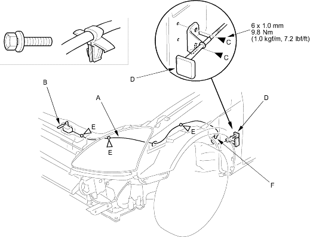

Front inner fender, left side, refer to the '01 Civic Shop Manual, P/N 62S5A00 on this CD (see page 20-259)
Kick panel, left side, refer to the '01 Civic Shop Manual, P/N 62S5A00 on this CD (see page 20-206)
Disconnect the hood opener cable (A) from the hood latch (B), refer to the '01 Civic Shop Manual, P/N 62S5A00 on this CD (see page 20-226) and remove the bolts (C), then remove the hood release handle (D) from the body.
Fastener Locations
C : Bolt, 2 E : Clip, 3

Using a clip remover, detach the clips (E) and remove the grommet (F) from the body, then remove the hood opener cable from the vehicle. Take care not to bend the cable.
Install the cable in the reverse order of removal and replace any damaged clips.
 : Bolt, 2 E
: Bolt, 2 E  : Clip, 3
: Clip, 3